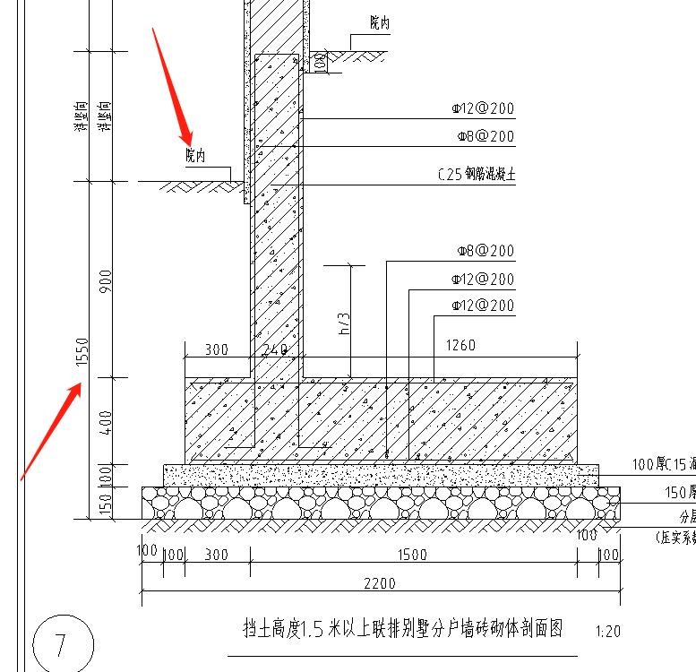
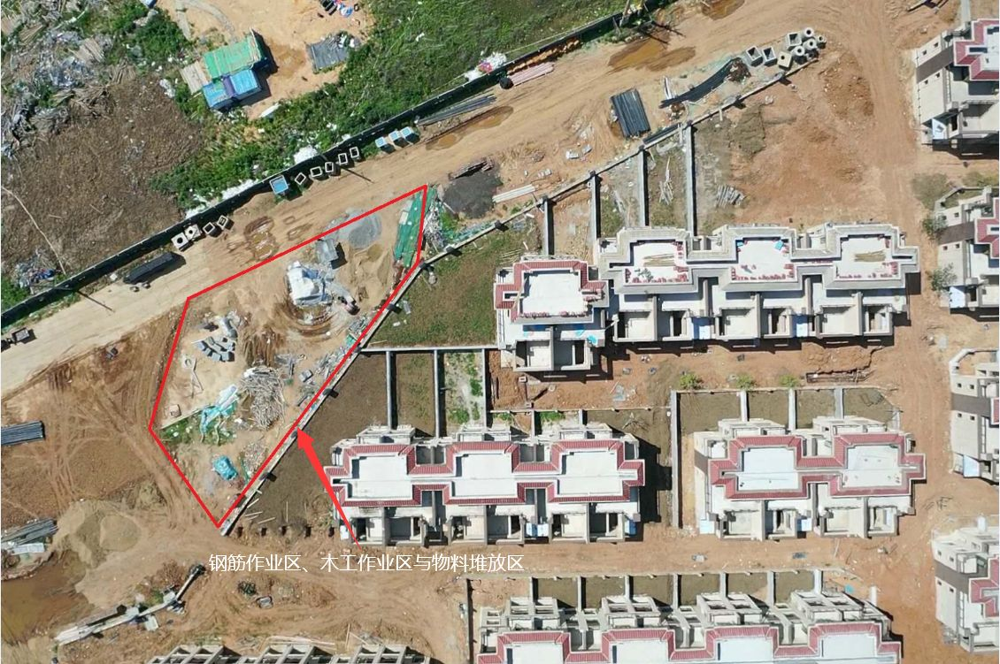

沈阳富力院士廷项目A地块“6·3”较大坍塌事故调查报告
2020年6月3日17时许，位于沈阳市沈北新区蒲丰路97号的富力院士廷项目A地块一期园林景观工程施工现场，发生一起较大坍塌事故，造成4名工人死亡，直接经济损失约967万元。事故发生后，施工单位、建设单位等相关责任人没有及时上报事故情况，并企图虚报事故死亡人数。近日，沈阳市应急管理局公布了此起较大坍塌事故调查报告。
一、基本情况
（一）工程概况及合同签订情况
沈阳富力院士廷项目A地块一期园林景观工程（以下简称园林景观工程），位于沈阳市沈北新区蒲丰路97号，工程占地面积约为68560m2,主要包括园建景观工程、景观安装工程和景观种植工程。
2019年11月4日，沈阳XX联合置业有限公司与广东XX环境股份有限公司（以下简称XX环境公司），签订园林景观工程施工合同，合同总价约1486.35万元。一批次（联排区）开工日期为2019年8月15日，计划竣工日期为2019年11月15日，工程实际开工时间为9月22日。
在工程施工期间，2020年4月1日，XX公司与广州XX工程有限公司（以下简称XX工程公司）补充签订《园建工程人工承包合同》，将园林景观工程的人工劳务发包给XX工程公司，合同约定XX工程公司指派尹XX为负责人，负责园林景观工程施工质量、安全管理。同时双方还签订了《安全生产协议》，约定有关事项。
合同签订后，XX环境公司将园林景观工程交由其下属沈阳分公司（以下简称XX沈阳公司）管理。XX沈阳公司对施工现场全面管理，XX工程公司没有指派人员实际参与施工现场管理工作。
（二）园林景观工程相关单位基本情况
1.建设单位。沈阳XX联合置业有限公司（以下简称XX置业公司），有限责任公司（台港澳法人独资），注册住所沈阳市沈北新区蒲河路98-2号，注册资本4250万美元，成立日期及营业期限2011年3月21日至2065年1月22日，经营范围房地产开发、自主房屋出租出售。
2.施工单位。广东XX环境股份有限公司，其他股份有限公司，地址：广州市天河区体育西路191号，注册资本1.1亿元，成立日期营业期限2000年7月17日至长期，经营范围：公共设施管理业。
3.工程劳务承包单位。广州XX工程有限公司，营业期限2017年2月7日至长期，住所为广州市天河区珠江东路12号，注册资本500万元，经营范围建筑装饰和其他建筑业。
二、施工许可证办理、工程监理及监管情况
（一）施工许可证办理情况
2019年9月22日，XX环境沈阳公司进场开始园林景观工程施工。
XX置业公司没有按照《建筑工程施工许可管理办法》第二条（从事各类房屋建筑及其附属设施的建造、装修装饰和与其配套的线路、管道、设备的安装，以及城镇市政基础设施工程的施工，建设单位在开工前应当依照规定申请领取施工许可证）的规定，办理园林景观工程施工许可证。
（二）工程监理情况
XX置业公司没有按照《建设工程监理范围和规模标准规定》第二条:（成片开发建设的住宅小区工程必须实行监理）的规定，指定监理公司对园林景观工程施工实行监理。
（三）工程监管情况
1.建设部门监管情况。
2018年10月15日，建新置业公司向沈北新区城市建设局，申请办理了富力院士廷项目A主体工程的建筑工程施工许可证，许可建设商业、1#-42#楼、地下车库等主体，但不含园林景观工程施工内容。
沈北新区城乡建设事务服务中心建设工程安全监督管理站（以下简称沈北新区安全站），受沈北新区城市建设局的委托，按照施工许可的内容对富力院士廷项目A主体工程进行安全监管（不含园林景观工程施工的监管）。
2019年9月22日至12月期间，XX环境沈阳公司在沈阳富力院士廷A地块一期项目工地陆续组织砌围墙、道路排水、绿化等施工，沈北新区安全站在对该项目主体工程施工实施安全监管过程中，没有对园林景观绿化违法施工行为核实检查。
2019年12月13日，沈北新区安全站依据有关规定，以沈北新区城市建设局的名义下达《沈阳市建设工程终止安全监督通知书》，终止对富力院士廷A12#-34#联排别墅区的施工安全监督。
2.城市管理行政执法部门监管情况。
沈阳市城市管理综合行政执法局沈北新区执法分局（以下简称沈北新区执法分局），依法行使本地区执法权限内园林绿化、建筑市场和房地产市场（建设工程质量、安全除外）等方面法律、法规、规章规定的行政处罚权。
2020年5月29日，沈北新区执法分局建筑市场中队，对沈阳富力院士廷项目A地块一期进行日常执法检查，检查中发现正在进行的园林景观绿化施工行为。执法检查人员下达了《现场检查笔录》，要求项目主体工程承包单位在5日内，协调提供该项目园林景观绿化工程的相关材料。之后，项目主体工程承包单位提供了工程主体承包合同及主体工程施工许可证，并说明园林景观绿化工程由XX置业公司另行分包，不在其承包范围之内。
沈北新区执法分局建筑市场中队负责人夏X，没有依法依规对园林景观工程施工合法性进行确认，认为该工程不属于建筑工程范畴，不需办理建筑工程施工许可证，没有对违法施工行为进行立案处理。
三、事故经过和应急救援情况
2019年9月22日，XX环境沈阳公司进场开始园林景观工程施工。当年12月初，因天气寒冷施工队伍撤场，但在XX置业公司的要求下，当月25日施工队伍再次返场，施工内容全部为砌筑别墅区围墙，直至2020年1月10日，工程暂停施工。2020年3月初，恢复园林景观工程施工。
（一）事故发生经过
2020年6月3日6时20分许，施工班长王XX，按照XX环境沈阳公司技术负责人杨XX的指派，指挥挖掘机司机蔚XX在富力院士廷A19#与27#楼之间，进行挡土墙基础沟槽开挖，该挡土墙挡土高度约1.65米，基础沟槽设计开挖深度为1.55米、长度约为11米、宽度2.2米，如下图。

挡土高度1.5米以上联排别墅分户墙构造柱形剖面图
司机蔚XX按照王XX在地面的划线位置，进行基础沟槽挖掘。由于受到现场管线井和其他因素的限制，挖掘后沟槽尺寸为宽度1.25米、长度13.1米、开挖深度2.3米，为南北向开挖，北半部分长7.4米，南半部分长5.7米（塌方段）。王XX检查后认为合格。施工现场整个沟槽为直立开挖，未进行放坡开挖，也未采取支护措施，距沟槽北侧有一级台阶供人员出入。
15时30分许，施工班长尹X东组织工人在上述19#与27#楼之间挡土墙基础沟槽底部，进行平整地面、放线确定绑扎钢筋位置。16时许，7名工人先后从沟槽北部台阶进入沟槽底部进行绑扎钢筋作业。白X青、刘X、包XX、王X会4人在沟槽内南部由南向北作业，曲X学、丛X利、徐X金3人在沟槽内北部作业，林X发负责在地面上搬运并向沟槽内递送钢筋。16时30分许，徐X金因被安排其他工作离开，沟槽内剩余6人继续进行绑扎钢筋作业。
17时许，林X发在地面上搬运钢筋回到沟槽南部时，看到沟槽南半部分的西侧地面开始开裂，大喊：“快跑！要塌方啦！”。沟槽内6名工人听到喊声后，立即站起准备逃生。与此同时沟槽南部西侧侧壁坍塌，塌方长度约5.7m，塌方平均宽度约1.25m，将沟槽内南部作业区的白X青、刘X、包X国、王X会4名工人掩埋，坍塌土层均超过4人胸口。沟槽内北部作业区的曲X学、丛X利2名工人迅速从沟槽北侧台阶跑到地面。
（二）应急处置情况
事故发生后，工人林X发、曲X学、丛X利3人大声呼喊寻求救援，杨XX、王XX、尹X东、XX置业公司项目经理姚X阳、园林景观工程师李X鹏，以及附近工人共20多人陆续赶来使用铁锹、木棍等工具救援，林X发又找来2台挖掘机参与挖土救援。
17时11分，王XX拨打“120”急救中心电话：“沈北新区尚柏奥莱附近富力院士廷工地塌方，4名工人被埋。”
17时20分许，白X青第一个被挖出，随后刘X、包X国、王X会3人陆续被挖出。
17时35分许，救护车赶到现场，经检查初步判定，两名伤者包X国、王X会无生命体征。随后救护车将两名重伤员白X青、刘X送至沈阳市七三九医院，18时08分到达医院，后经抢救无效两人于19时55分死亡。
18时04分许，劳务负责人尹XX向姚X阳请示，拟将伤者包X国、王X会送至沈阳市七三九医院，姚X阳为减小伤亡事故对企业的影响，要求尹XX将两名伤者送至东北国际医院，并告之已经安排好医院的联系人。尹XX安排施工班长王XX和司机陆X国，用金杯面包车将包X国、王X会送往东北国际医院。姚X阳在此期间将东北国际医院的联系人电话发给尹XX。19时04分，包X国、王X会被送到东北国际医院，经检查后医院宣布两人死亡。
（三）事故报告情况
事故发生后，施工单位XX环境公司没有按照《生产安全事故报告和调查处理条例》的规定向市区应急、建设部门报告事故发生情况，也未向公安机关报警。建设单位XX置业公司也未向有关部门报告事故发生情况。
6月3日20时12分，沈阳市应急管理局指挥中心（以下简称指挥中心）接到沈阳市委信息室电话通知，称接到120急救中心事故报告信息，要求核实沈北新区富力院士廷项目发生坍塌事故有关情况。20时14分，指挥中心向沈北新区应急管理局核实事故信息。20时21分，指挥中心与120急救中心核实事故信息。20时22分，120急救中心有关负责人将事故信息转发给指挥中心负责人。20时25分，确认事故信息后，沈阳市、沈北新区两级政府以及应急、公安、建设等部门人员，先后赶到沈阳富力院士廷A项目部对事故情况进行调查核实。
市、区两级政府有关部门工作人员现场调查时，姚X阳、XX沈阳公司副总经理张X，均称事故造成2人死亡。直至当日22时许，公安人员调取李X鹏的手机微信聊天记录，发现相关证据后，XX置业公司、XX沈阳环境公司有关人员才开始陆续承认事故造成4人死亡的事实。
四、事故原因和事故性质
（一）直接原因
XX工程公司施工人员在进行基础沟槽挖掘过程中，未按照规定采取放坡开挖或者侧壁支护防护措施，开挖坡率不满足沟槽稳定要求，边坡承重力过大，土层失稳发生坍塌，导致沟槽内作业人员被埋身亡。
（二）间接原因
1.建设单位XX置业公司没有按照《中华人民共和国安全生产法》第四条的规定，履行安全生产职责，落实企业安全生产主体责任。
（1）未按照《建筑施工许可管理办法》第二条的规定，办理园林景观工程的建筑施工许可证，没有对施工项目办理安全监管手续，擅自组织施工单位违法施工。
（2）没有按照《建设工程监理范围和规模标准规定》第二条的规定，安排工程监理公司对施工过程实行监理。未审核施工单位安全管理机构建立及相关人员资质等，致使建设项目失管失控。
（3）没有按照双方签订的《沈阳富力院士廷项目A地块一期园林景观工程施工合同》第九项的内容，对施工组织设计和施工方案进行审核，对危险性较大的施工活动没有正确辨识并纠正现场违规施工行为。
2.园林景观工程施工单位XX环境公司，没有按照《中华人民共和国安全生产法》第四条的规定，履行安全生产职责，落实企业安全生产主体责任。
（1）施工现场安全管理力量薄弱，没有建立安全管理机构，未设置专职安全管理人员。2019年10月初，项目经理离职后，没有按规定及时配备，致使项目主要管理人员长期空缺。
（2）挡土墙基坑沟槽挖掘工程，未按照《危险性较大的分部分项工程安全管理规定》的要求，编制专项施工方案。
（3）在园林景观工程无施工许可证的情况下，实施违法建设施工活动。
（4）没有按照《生产安全事故应急条例》第十条的规定，建立应急救援队伍。
3.人工承包单位XX工程公司没有按照合同约定对施工期间的质量安全进行管理，对工程施工活动失管失控。
4.沈北新区行政执法、城乡建设部门对园林景观工程违法施工行为未予查处，致使建设项目失管失控。
经调查，该工程包含构建筑物基础土方开挖、路面铺装、钢筋砼结构、给排水管道安装等多项典型建筑施工内容，施工区使用挖掘机、铲车等大型设备，园区南部设置钢筋加工区、木工作业区、物料存放区等多个作业场所，违法施工行为没有被沈北新区行政执法、城乡建设部门予以及时纠正。

园区南部设置约300平方米的钢筋区、木工区以及物料区
（1）沈北新区执法分局，2020年5月29日的执法检查中，发现园林绿化工程涉嫌违法施工行为，但没有对其建筑施工属性正确认定，没有对违法施工行为立案查处，致使违法施工行为没有得到及时纠正，造成安全监管的盲区。
（2）沈北新区城乡建设事务服务中心，在对富力院士廷A地块一期项目主体工程实施安全监管期间，没有认真履行职责，没有及时发现园林景观绿化的施工活动，导致违法施工活动失管失控。
（三）事故的善后处理工作
事故发生后，沈北新区人民政府协调有关部门，对善后工作进行处理，6月6日，XX环境公司分别与各死者家属签署赔偿协议，死者遗体火化处理完毕，善后工作结束。
（四）事故的性质
经调查认定，沈阳富力院士廷项目A地块一期“6.3”较大坍塌事故是一起生产安全责任事故。
五、对事故有关责任人和责任单位的处理建议
（一）建议由司法机关依法处理的人员
1.姚X阳，沈阳XX联合置业有限公司沈阳富力院士廷项目A地块一期项目经理，负责工程项目的全面工作，事故发生后，指使、串通有关人员谎报、瞒报事故情况，建议由司法机关依法处理，并依据《生产安全事故报告和调查处理条例》第三十六条第（一）项的规定，由沈阳市应急管理局对其处以2019年度收入100%罚款的行政处罚。
2.王XX，园林景观工程施工班长。未严格按照《挡土高度1.5米以上联排别墅分户墙构造柱剖面图》（图纸编号DCA-17.2）的施工设计组织施工，擅自改变挡土墙基坑沟槽施工技术数据，违章指挥挖掘机驾驶员直立开挖，未按《建设工程安全生产管理条例》《土方与爆破工程施工及验收规范》（GB50201-2012）《建筑地基基础工程施工规范》（GB51004-2015）的规定，采取放坡开挖或支护防护措施，对事故发生负有直接责任。建议由司法机关依法处理。
3.尹XX，园林景观工程施工负责人，未认真履行安全管理职责，没有指派专职人员对现场的安全生产工作实施管理，没有及时消除生产安全事故隐患，对事故的发生负有管理责任。建议由司法机关依法处理。
4.杨XX，XX环境沈阳公司园林景观工程技术负责人，对现场工人未严格按照设计施工图施工的违章行为没有及时发现和纠正，对事故发生负有管理责任。建议由司法机关依法处理。
5.张X，XX环境沈阳公司副总经理，负责该公司全面工作，督促、检查本单位的安全生产工作不到位，未及时消除生产安全事故隐患；对公司所属工程项目安全管理机构不健全、未配备专职安全管理人员，以及项目经理长期不在位的问题失察失管，对事故的发生负有领导责任。建议由司法机关依法处理。
6.郑X贞，XX工程公司法定代表人，未履行主要负责人安全生产工作职责，督促、检查本单位的安全生产工作不到位，未及时消除生产安全事故隐患，对事故的发生负有领导责任。建议由司法机关依法处理，依据《中华人民共和国安全生产法》第九十二条第（二）项的规定，由沈阳市应急管理局对其处以2019年度收入40%罚款的行政处罚。
（二）建议给予政纪处分的人员
1.夏X，沈北新区执法分局建筑市场中队副中队长，负责中队全面工作，未认真履行职责，对检查发现的违法施工行为没有作出正确认定，未及时给予纠正和处理，致使违法行为持续进行，对事故发生负有监管责任。建议按照干部管理权限对其给予行政记大过处分。
2.赵X，沈北新区执法分局局长，对辖区内违法施工行为监管不到位，对所属人员未认真履行职责，执法不到位情况失察失管，对事故的发生负有领导责任。建议按照干部管理权限给予行政记过处分。
3.王X君，沈北新区城乡建设事务服务中心安全站工作人员，未认真履行职责，对监管区域内的违法施工行为失察，导致出现监管盲区，对事故发生负有监管责任。建议按照管理权限给予行政警告处分。
4.赵X，沈北新区城乡建设事务服务中心安全站站长，负责该区建设项目安全监管工作，对所属工作人员未及时发现违法施工行为问题失察，对事故发生负有监管责任，建议按照干部管理权限给予诫勉谈话。
5.赵X喆，沈北新区城乡建设事务服务中心副主任，分管沈北新区安全站等部门工作，对沈北新区安全站工作人员未及时发现违法施工行为等问题负有领导责任，建议按照干部管理权限给予诫勉谈话。
6.方X斌，沈北新区辉山开发区副主任，原沈北新区政府副区长，自2018年12月起至2020年5月，分管沈北新区城市建设、城管执法工作，对事故发生建设工程项目存在的未批先建、失查失管行为负有领导责任，建议按照干部管理权限对其给予行政警告处分。
（三）建议给予行政处罚的人员
1.杨X军，沈阳XX联合置业有限公司法定代表人，督促、检查本单位的安全生产工作不到位，其行为违反了《中华人民共和国安全生产法》第十八条第（五）项的规定，对事故发生负有领导责任。依据《中华人民共和国安全生产法》第九十二条第（二）项的规定，建议由沈阳市应急管理局对其处以2019年度收入40%罚款的行政处罚。
2.李X鹏，沈阳XX联合置业有限公司园林景观工程工程师，事故发生后未如实报告生产安全事故，其行为违反了《生产安全事故报告和调查处理条例》第四条的规定，依据《生产安全事故报告和调查处理条例》第三十六条第（一）项的规定，建议由沈阳市应急管理局处以2019年度收入100%罚款的处罚。
（四）对事故责任单位的处理建议
1.广州XX工程有限公司，园林景观工程劳务承包单位，未认真落实企业安全生产主体责任，没有按照施工组织设计进行基坑沟槽施工并采取防护措施，没有按照合同约定对施工期间的质量安全进行管理，工程施工活动失管失控，对事故发生负有直接责任。其行为违反了《中华人民共和国安全生产法》第二十二条第六项的规定，对事故的发生负有直接责任，依据《中华人民共和国安全生产法》第一百零九条第（二）项和《沈阳市安全生产行政自由裁量指导标准》序号35的规定，建议由沈阳市应急管理局给予罚款60万元的行政处罚。
2.广东XX环境股份有限公司，园林景观工程施工单位，未认真落实企业安全生产主体责任，在不具备安全生产条件的情况下，组织从业人员进行施工活动；工程项目安全管理机构不健全、未配备专职安全管理人员；在建设方未取得施工许可手续的情况下，实施违法施工；事故发生后，有关人员有谎报、瞒报事故的行为，其行为违反了《中华人民共和国安全生产法》第十七条、第二十一条第一款、《生产安全事故报告和调查处理条例》第四条的规定，对事故发生负有责任。
（1）依据《中华人民共和国安全生产法》第一百零九条第（二）项和《沈阳市安全生产行政自由裁量指导标准》序号35的规定，建议由沈阳市应急管理局给予罚款60万元的行政处罚。
（2）依据《生产安全事故报告和调查处理条例》第三十六条第（一）项和《国家安全生产监督管理总局安全生产行政处罚自由裁量标准》中《生产安全事故报告和调查处理条例》相关规定实施标准第（四）项的规定，建议由沈阳市应急管理局给予罚款200万元的行政处罚。
建议由沈阳市应急管理局，给予以上两项合并罚款260万元的行政处罚。
3.沈阳建新联合置业有限公司，园林景观工程建设单位，在未取得施工许可证的情况下，违法组织施工，并且直接影响了政府监管工作；未按规定指派监理公司对施工活动进行监管；事故发生后，项目负责人指使、串通本公司和XX沈阳公司有关人员谎报、瞒报事故，其行为违反了《建筑工程施工许可管理办法》第三条，《建设工程监理范围和规模标准规定》第二条第（三）项和《生产安全事故报告和调查处理条例》第四条的规定，对事故发生负有责任。
（1）依据《中华人民共和国安全生产法》第一百零九条第（二）项和《沈阳市安全生产行政自由裁量指导标准》序号35的规定，建议由沈阳市应急管理局给予罚款60万元的行政处罚。
（2）依据《生产安全事故报告和调查处理条例》第三十六条第（一）项和《国家安全生产监督管理总局安全生产行政处罚自由裁量标准》中《生产安全事故报告和调查处理条例》相关规定实施标准第（四）项的规定，建议由沈阳市应急管理局给予罚款200万元的行政处罚。
建议由沈阳市应急管理局，给予以上两项合并罚款260万元的行政处罚。
（五）建议给予通报批评的单位
1.沈北新区执法分局，对违法施工行为监管不力、性质认定不准确、立案查处不及时，致使违法施工行为持续进行，造成监管盲区，打非治违工作落实不到位，建议该局向沈北新区政府作出深刻书面检查，并由沈北新区政府通报批评。
2.沈北新区城乡建设事务服务中心，对处于建筑工程安全监管期间，现场存在的违法施工行为失管失察，打非治违工作落实不到位。建议该局向沈北新区政府作出深刻书面检查，并由沈北新区政府通报批评。
六、事故防范和整改措施
（一）广州XX工程有限公司，要深刻吸取事故教训，增强法制意识，树立严格遵章守纪规范施工的观念，规范工程管理程序，加强对从业人员的培训教育和现场管理，确保施工安全，杜绝此类事故的发生。
（二）广东XX环境股份有限公司，要深刻吸取事故教训，立即停工整改，举一反三，认真查找和解决安全生产工作中的漏洞，规范工程管理程序，配备专职安全生产管理人员，加强安全管理力量，研究制定专项施工方案，并严格按方案组织施工，加强对从业人员的安全培训教育和现场管理，确保施工安全，杜绝此类事故再次发生。
（三）沈阳XX联合置业有限公司，要深刻吸取事故教训，依法办理有关施工许可手续，无正式施工手续前不得违法开工；全面加强园林景观施工的安全管理工作，按照规定指派监理公司对施工活动全程监管；认真审核各项施工方案，杜绝赶工期、抢进度的现象，切实保证各项安全生产规章制度落实。
（四）沈北新区政府要举一反三，深入贯彻落实《全市安全生产专项整治三年行动实施方案》（沈安委〔2020〕6号），在全区范围内开展城市建设安全整治，落实各部门安全生产责任制。
1.沈北新区执法分局，要进一步明确建筑施工领域打非治违工作职责，努力提高监管工作业务能力，增强安全监管的责任心和主动性，对隐患苗头要一抓到底，落实责任，防止出现监管盲区。
2.沈北新区城乡建设事务服务中心，要进一步明确建筑施工领域打非治违工作职责，完善无施工许可证在建工程的处理联动机制，增强安全监管的责任心和主动性，加大执法检查频次和力度，督促各建设项目参与单位全面落实安全生产主体责任。
原文编辑: EHS资讯
原文链接: https://ehsinfo.cn/2020/10/20/沈阳富力院士廷项目坍塌事故调查.html
版权声明: 转载请注明出处(必须保留作者署名及链接)